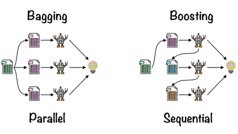

It’s a machine learning algorithm that uses the same learning method to train multiple models. Bagging is a technique for reducing variation in estimate by producing extra data for training from the data set by combining multiple sets of the original data with repeats. When compared to a single decision tree classifier, ensemble approaches aggregate numerous decision tree classifiers to provide higher prediction performance.
The ensemble model’s core idea is that a set of weak learners join together to become a strong learner, boosting the model’s accuracy. In addition, the doctor’s choice might be used as an example of this method. Even if the patient gets just one doctor’s suggestion, having the issue evaluated by multiple physicians will boost the chances of success. In a similar manner, ensemble learning algorithms function.

In general, This article looks at the bagging and boosting approach, which is one of numerous ensemble learning methods.
Using the bagging approach may reduce a decision tree classifier’s variance . The steps for bagging are as follows:
Step 1: Suppose the training dataset has A observations and B characteristics. From the training data set, a random sample picked.
Step 2: Select a subset of B characteristics. Nodes are responsible for division.
Step 3: The tree has grown to its full size.
Step 4: Based on aggregating the predictions from n trees, the preceding processes repeated n times.
When we consider the benefits of the bagging method, we can see that it reduces model over fitting. As a result of it is better at handling data with more dimensions. Missing data does not affect and continues to achieve results. The problem is that since it depends on bagging subtree methods, it may not deliver correct values for the classification and regression model.
We uses the successive trees method in the boosting method. The aim of this strategy is to improve the accuracy of the previous trees. Even if data is wrongly categorized, its weight grows, boosting the likelihood of right classification in subsequent classifications. One of the key aims of this strategy is to develop a model structure that performs better on weak learners.
Consequently, supporting various loss functions is one of the benefits of the boosting method. Interactions function nicely with it. It has the disadvantage of being over-fitting.
You can find a lot of information on the subject here.
Please click for more information.